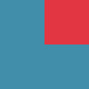
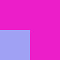
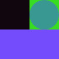
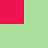
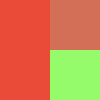

my studio
warehouse on first floor. office/studio and balconies on 2nd and 3rd floor.
poetica coffeeshop
outdoor seating area is quiet, in nature. plentiful tables, outlets.

thai farm restaurant
delicious food and outdoor/indoor seating. friendly owner. great market for food and drinks across street.
king david tacos
Delicious breakfast tacos. Get there early before they sell out. North side of park.
prospect park
I looove this park. I bike around, read in the woods, sit by the water, and bbq. Secret summer concerts in the trees.

Mimi's
my fave local restaurant. shawarma, hummus, baba ghanoush is a go-to here.
Father and Sons bodega
Good for drinks and quick snacks. Friendly owner.

Bodega 1
corner Bodega when I don't feel like walking far.
Qathra
local coffeeshop with nice backyard. Good for when I want to stay near home but get out of the house.
Coop market
Local coop supermarket. High prices. Good for specialty items not found at CTown.

CTown
Local neighborhood supermarket. Good produce section. Fast checkout line.

my house
entrance on left. bike ramp non-functional. 3rd floor walk-up.